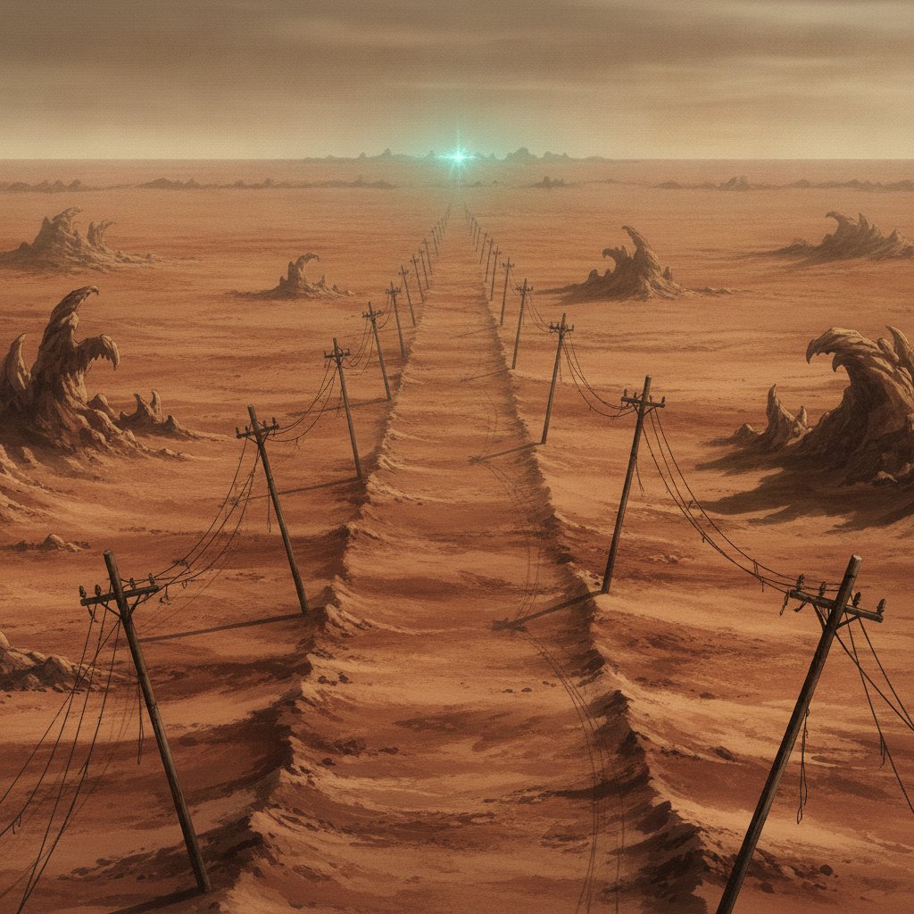

The Vashan Borderland is a harsh, scrubbed-open country of red dust and wind-carved rock. No forge for a hundred miles to shelter a Kiln-Sworn.
Ember's raw power, typically a shield, here becomes a beacon, drawing unwanted attention across the vast, exposed horizon. We are hunted.
Between escapes, as we huddle in the sparse shelter of dead telegraph lines, she lets slip, never as complaint, how little time she believes the Rust will leave her.
The memory of the executed pair lands on me like a warning. A cold premonition.